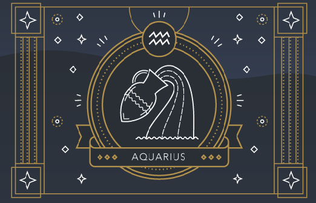
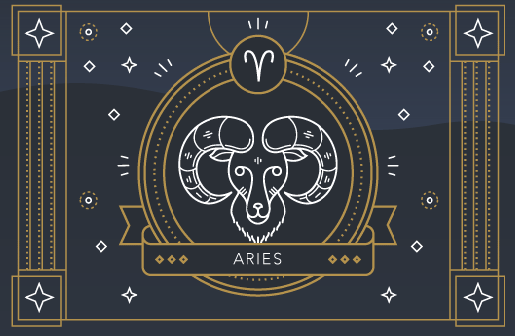
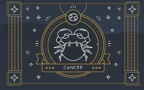
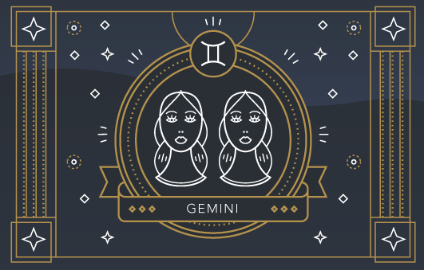
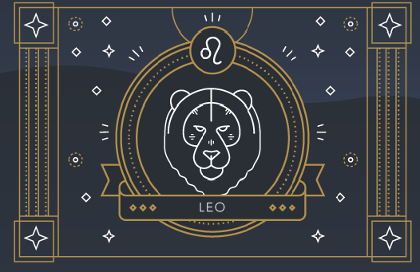
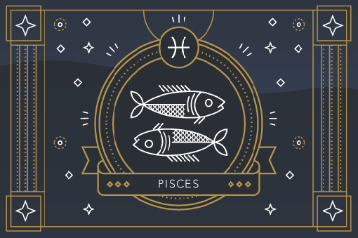
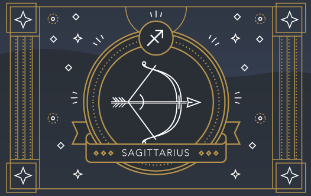
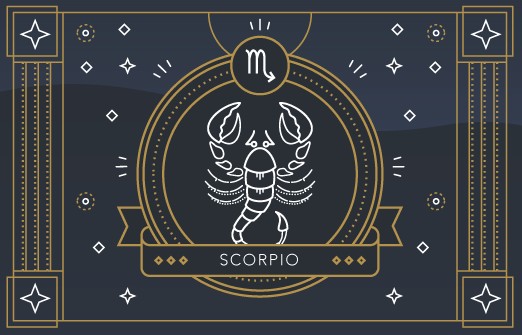
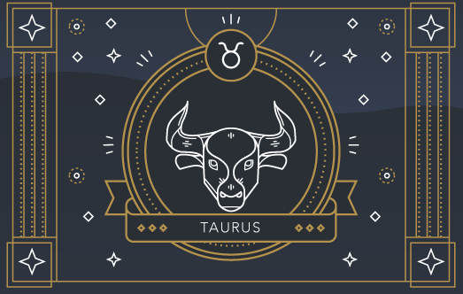
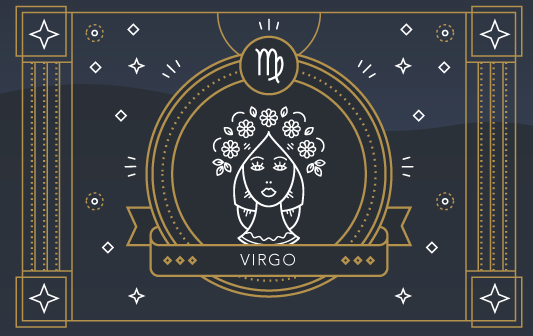

About Yourself (Aquarius)
Despite the “aqua” in its name, Aquarius is actually the last air sign of the zodiac. Aquarius is represented by the water bearer, the mystical healer who bestows water, or life, upon the land. Accordingly, Aquarius is the most humanitarian astrological sign.
Strengths
- Intelligent
- Inventive
- Humanistic
- Friendly
- Altruistic
- Reformative
Weaknesses
- Impersonal
- Emotionally Detached

About Yourself (Aries)
Aries loves to be number one, so it’s no surprise that these audacious rams are the first sign of the zodiac. Bold and ambitious, Aries dives headfirst into even the most challenging situations.
Strengths
- Brave
- Direct
- Fearless
- Independent
- Deep Sense of Justice
- Natural Leader
Weaknesses
- Aggressive
- Inconsistent
- Bad-tempered
- Pushy

About Yourself (Cancer)
Cancer is a cardinal water sign. Represented by the crab, this crustacean seamlessly weaves between the sea and shore representing Cancer’s ability to exist in both emotional and material realms. Cancers are highly intuitive and their psychic abilities manifest in tangible spaces: For instance, Cancers can effortlessly pick up the energies in a room.
Strengths
- Nurturing
- Supportive
- Healing
- Compassionate
- Unconditionally Loving
Weaknesses
- Moody
- Passive Aggressive
- Unable to Let Go

About Yourself (Capricorn)
The last earth sign of the zodiac, Capricorn is represented by the sea goat, a mythological creature with the body of a goat and tail of a fish. Accordingly, Capricorns are skilled at navigating both the material and emotional realms.
Strengths
- Driven
- Patient
- Strategic
- Determined
- Disciplined
- Responsible
- Persistent
Weaknesses
- Cynical
- Ruthless
- Fearful

About Yourself (Gemini)
Have you ever been so busy that you wished you could clone yourself just to get everything done? That’s the Gemini experience in a nutshell. Appropriately symbolized by the celestial twins, this air sign was interested in so many pursuits that it had to double itself.
Strengths
- Intelligent
- Adaptable
- Agile
- Communicative
- Informative
- Connected
Weaknesses
- Talkative
- Deceptive
- Cunning
- Inconsistent

About Yourself (Leo)
Roll out the red carpet because Leo has arrived. Leo is represented by the lion and these spirited fire signs are the kings and queens of the celestial jungle. They’re delighted to embrace their royal status: Vivacious, theatrical, and passionate, Leos love to bask in the spotlight and celebrate themselves.
Strengths
- Brave
- Playful
- Leader
- Fun
- Warm
- Protective
- Generous
- Charismatic
Weaknesses
- Egotistical
- Dominating
- Controlling
- Stubborn
- A Show-off

About Yourself (Libra)
Libra is an air sign represented by the scales (interestingly, the only inanimate object of the zodiac), an association that reflects Libra's fixation on balance and harmony. Libra is obsessed with symmetry and strives to create equilibrium in all areas of life.
Strengths
- Charming
- Harmonious
- Easy-going
- Diplomatic
Weaknesses
- Gullible
- Superficial
- Indecisive
- Hypocritical
- Aggressive
- Passive

About Yourself (Pisces)
Pisces, a water sign, is the last constellation of the zodiac. It's symbolized by two fish swimming in opposite directions, representing the constant division of Pisces' attention between fantasy and reality. As the final sign, Pisces has absorbed every lesson — the joys and the pain, the hopes and the fears — learned by all of the other signs.
Strengths
- Mystical
- Intuitive
- Creative
- Romantic
- Compassionate
- Sensitive
Weaknesses
- Submissive
- Dependent
- Unrealistic
- Self-pitying

About Yourself (Sagittarius)
Represented by the archer, Sagittarians are always on a quest for knowledge. The last fire sign of the zodiac, Sagittarius launches its many pursuits like blazing arrows, chasing after geographical, intellectual, and spiritual adventures.
Strengths
- Ambitious
- Lucky
- Moral
- Optimistic
- Enthusiastic
- Open-minded
- Versatile
Weaknesses
- Blindly Optimistic
- Gluttonous
- Restless

About Yourself (Scorpio)
Scorpio is one of the most misunderstood signs of the zodiac. Because of its incredible passion and power, Scorpio is often mistaken for a fire sign. In fact, Scorpio is a water sign that derives its strength from the psychic, emotional realm.
Strengths
- Passionate
- Driven
- Emotional
- Determined
- Sacrificing
- Perceptive
Weaknesses
- Jealous
- Paranoid
- Clingy
- Destructive

About Yourself (Taurus)
Taurus is an earth sign represented by the bull. Like their celestial spirit animal, Taureans enjoy relaxing in serene, bucolic environments surrounded by soft sounds, soothing aromas, and succulent flavors.
Strengths
- Steady
- Driven
- Tenacious
- Enduring
- Persistent
- Patient
Weaknesses
- Materialistic
- Resistant to Change
- Indulgent
- Stubborn
- Possessive

About Yourself (Virgo)
Virgo is an earth sign historically represented by the goddess of wheat and agriculture, an association that speaks to Virgo’s deep-rooted presence in the material world. Virgos are logical, practical, and systematic in their approach to life. This earth sign is a perfectionist at heart and isn’t afraid to improve skills through diligent and consistent practice.
Strengths
- Modest
- Humble
- Orderly
- Altruistic
- Responsible
Weaknesses
- Obsessive
- Critical
- Perfectionist